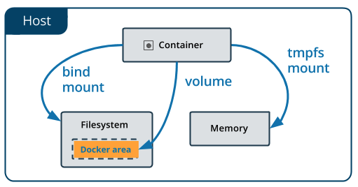

Docker Compose で Volumes をつかう
目次
web のイメージをビルド...するところは、 Docker Compose で Django/PostgreSQL 環境をつくる を参照のこと。
db-data という名前の volume を作成する。
$ docker volume create db-data
db-data
volumes を一覧表示する。
$ docker volume ls DRIVER VOLUME NAME local db-datavolume を調べる。
$ docker volume inspect db-data [ { "CreatedAt": "2018-12-02T13:09:48Z", "Driver": "local", "Labels": {}, "Mountpoint": "/var/lib/docker/volumes/db-data/_data", "Name": "db-data", "Options": {}, "Scope": "local" } ]
今作った volume はこの絵↓の真ん中のものである。

version: '3'
services:
db:
image: postgres:latest
volumes:
# コンテナの `/var/lib/postgresql/data` を、volume `db-data` にマウントする。
- "db-data:/var/lib/postgresql/data"
# 環境変数を追加する
environment:
# postgres のパスワードを設定する
- POSTGRES_PASSWORD=postgres
web:
build:
context: .
dockerfile: Dockerfile-web
command: python3 manage.py runserver 0.0.0.0:8000
volumes:
- .:/code
ports:
- "3236:8000"
depends_on:
- db
# volumes を定義する
volumes:
# volume の名前を指定
db-data:
# Compose の外ですでに作成済みの volume を指定する場合は ture を設定する。
# そうすると、 docker-compose up 時に Compose は volume を作成しようとしません。
# かつ、指定した volume が存在しないとエラーを raise します。
external: true
external: true を書かないと、 $ docker-compose up 時に 1. で作った db-data とは別に {プロジェクト名}_db-data という感じの名前の volume が作られて、そちらが使われる。
それでもまあかまわないけれど。今のところは。
DATABASES = {
'default': {
'ENGINE': 'django.db.backends.postgresql',
'NAME': 'postgres',
'USER': 'postgres',
'PASSWORD': 'postgres', # パスワードを追加した
'HOST': 'db',
'PORT': 5432,
}
}
$ docker-compose up
1). db コンテナのなかに入る
# コンテナをシェル経由で操作する $ docker container exec -it fffff_db_1 sh
2). postgres に接続する
-- postgres に接続するその１ # psql -U postgres -h 127.0.0.1 -p 5432 postgres psql (11.1 (Debian 11.1-1.pgdg90+1)) Type "help" for help. postgres=# -- postgres に接続するその２ # psql -d postgres -U postgres -W Password: psql (11.1 (Debian 11.1-1.pgdg90+1)) Type "help" for help. postgres=#
3). テーブルを作成し、データを挿入する
CREATE TABLE fruits( id SERIAL PRIMARY KEY, name VARCHAR NOT NULL ); INSERT INTO fruits(name) VALUES('orange'); INSERT INTO fruits(id,name) VALUES(DEFAULT,'apple'); postgres=# \q
先ほど作成したテーブルとデータがありました。
$ docker-compose up
$ docker container exec -it fffff_db_1 sh
# psql -U postgres -h 127.0.0.1 -p 5432 postgres
psql (11.1 (Debian 11.1-1.pgdg90+1))b
Type "help" for help.
postgres=# \dt
List of relations
Schema | Name | Type | Owner
--------+--------+-------+----------
public | fruits | table | postgres
(1 row)
postgres=# SELECT * FROM fruits;
id | name
----+--------
1 | orange
2 | apple
(2 rows)